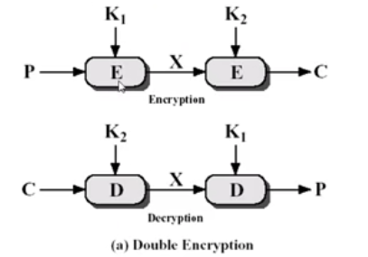
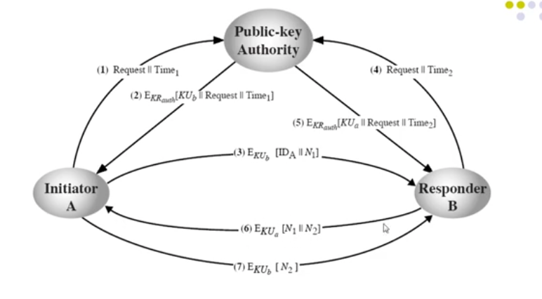
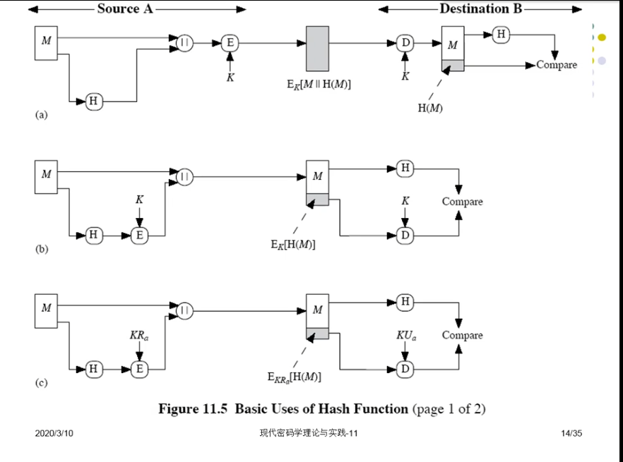
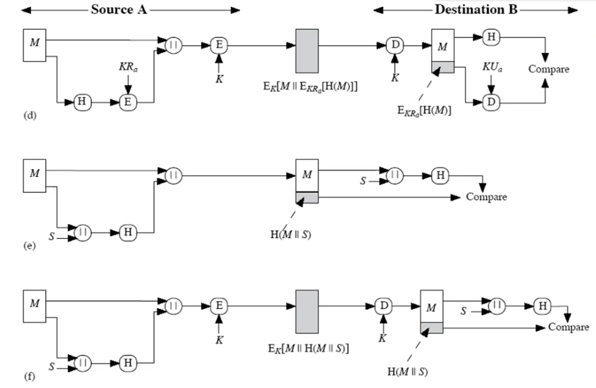

密码学
第二章
密码学基本术语
Key：密钥，对加密和解密过程进行控制的参数。
Cipher：加密方法。
Encipher：加密。将明文转换为密文。
Decipher：解密。将密文还原成明文。
Plaintext：明文。
Ciphertext：密文。
大多数加密算法、解密算法是公开的。密钥来保证算法的安全性。密钥是不公开的。
理论安全：攻击者无论截获多少密文，都无法得到足够的信息来唯一地决定明文。Shannon证明，如果想要达到理论安全，密钥长度要大于等于明文长度，并且一次一密，用完即丢。这种是不现实的。
实际安全：如果攻击者有无限资源，任何密码系统都是可以被破译的，但是在有限资源内，攻击者都不能通过系统的分析方法来破解系统，则称这个系统是计算上安全的。现有的商用密码都是实际安全的。
加密系统可以用数学符号来描述。
S = {P,C,K,E,D}。这五个分别是，明文空间，密文空间，密钥空间，加密变换，解密变换。如果对数字加密，那明文空间就是0~9。
对称式密码体制：加密和解密所用密钥是相同的。开放性差。
非对称密码体制：加密和解密是分开的，开放性好。
序列密码体制：加密以比特为单位，密文不仅与算法和密钥有关，也和明文位置有关。
分组密码体制：加密以组为单位，与明文位置无关。明文长度和密文长度相同。
确定型密码体制：明文和密钥确定后，密文也确定了。
概率密码体制：明文和密钥确定后，密文通过客观随机因素从密文集合中产生，密文形式不确定。
单向函数型密码体制：适用于不需要解密的场合，容易将明文加密成密文。如哈希函数。
双向变换型密码体制：加密解密可逆。
对称密码系统的模型
收发双方必须在某种安全的形式下获得密钥并必须保证密钥的安全。
基本要求：强加密算法，只有双方知道的密钥。因此必须有一个安全的途径或信道分发密钥。
将明文转换为密文和操作类型：代换和置换。代换是用另一个元素来代替，置换是对顺序进行重新排序。
对加密信息攻击的类型：
唯密文攻击：捕获密文。
已知明文攻击：一段时间明文解密，攻击者得到一些明文密文对应关系，仍然不能破解。
选择明文攻击：对于已知明文攻击有了选择性。攻击者可以主动选择明文询问，得到需要的明文密文。
选择密文攻击：发送密文，准备密文更难。
选择文本攻击：包括了第三第四条。
DES
DES(数据加密标准)的分组和密钥是64位和56位，扩展了Feistel密码结构。
混淆：希望密文和密钥的关系尽量复杂。
扩散：明文统计结构扩散消失到大批密文统计特性中，例如改变明文1bit，密文多余1bit改变。
Feistel结构
Feistel结构是对称的，除第一轮外，每一轮的左边都是上一轮右边的输出(代换)，右边则是Ri = Li-1 ^ F(ki , Ri-1)。典型轮数是16轮。128位是常用密钥长度。解密时，输入密文，以相反的次序使用密钥。
DES流程
输入明文和密钥，根据初始置换表进行初始置换，将指定位置i上的值置换到指定位置j上(在原有明文上打乱顺序)。恢复时根据逆置换。
扩充置换，根据扩充置换表将原有数据扩充，DES中是左右部各扩充8位。(这一步完成了混淆和扩散)。
56位密钥分为左右两部分，先循环左移，再通过P置换和收缩得到48位子密钥。
将32位右半部和48-bit子密钥做如下操作(F函数)：
使用扩充置换表E，将32位右半部扩充成48位。
与子密钥异或。
48位结果送进8个替换盒(将6位映射成4位)，得到32位，再用32位置换表P进行置换。S盒映射，外侧1和6位用作行选择，其余用作列选择。例如110011，定位于第三行第九列，作用于盒8，则得到的数据是12，也就是1100。
之后与上一轮的左部进行异或，得到下一轮的右部。
多重加密
穷举攻击对于DES是可行的。
对称密码有5种工作模式。
双重DES
先用K1、K2加密，再用K2、K1解密，密钥长度是112位。但用中途相遇攻击能破解，实际上破解复杂度并没有因为密钥复杂度的提升而提升。可以穷举K1,K2，中间值X = Ek1(M) = Dk2(C)。

三重DES
- 用两个密钥进行E-D-E
- 用三个密钥进行E-D-E
AES
高级加密标准。
加密模式
1.电子密码本模式(ECB)，分组之后用同一密钥进行加密，相同明文得到相同密文。
2.密文分组链接模式(CBC)，加密输入是当前明文和前一组密文进行异或，之后再用密钥加密。第一组需要有一个初始向量和初始明文进行异或。解密是用密文与密钥作用，之后和前一组密文异或。IV不能明文传送给接收方。因为DES是有扩散性和混淆的，没有办法通过改变密文来改变明文里的指定比特，因为扩散性，这样就知道密文被破坏了。我们要阻止攻击者对指定比特进行改变，例如攻击者把你的薪水50000改成50(😀)。但明文混乱，就能识别出来密文被改变(薪水变成500ab一眼真)。如果攻击者获得IV，就能直接对第一组明文进行指定比特改变(因为是异或操作)。
3.密码反馈模式(CFB)，将DES转化成流密码(逐比特)。优点是转换成流密码。缺点是如果工作出现差错，例如C1错，解密会导致P1错，而C1又要注入到下一步P2的解密，就会导致后面的明文解密全部出错。也就是比特差错会传播。
4.输出反馈模式(OFB)，不同于CFB，OFB是加密函数的输出到下一次加密，CFB是密文输出到下一轮加密。即使C1错，只会影响到P1，防止比特差错的传播。但缺点也很明显，更容易受到报文流篡改攻击。通过修改密文，可以修改指定比特，对明文中的某些比特进行改变。(和CBC很像)为什么CFB不容易受影响，是因为CFB的比特差错会传播，C1被篡改会影响后续。
5.计数器模式(CTR)，和OFB很像，但加密的是计数器的值。应用于高速网络，因为这个方向可以并行，非常高效。不重复使用密钥和计数器值。
单向函数
给x容易求y，给y不容易推x。
单项陷井门函数，除非给陷门，不然给x容易求y，给y不容易推x。可以类比，有x求y是加密，有y推x是解密，暗门就是密钥。
公钥密码思想
对称密码体制的问题：
加解密能力捆绑在一起。
密钥更换、传递和交换需要可靠信道，密钥分发困难。
如果有N个用户，需要N(N-1)/2个密钥。
无法满足两个不相识的人之间的通信，因为在通信之前需要有一模一样的密钥。(根本问题)
不能实现数字签名。
非对称的特点：
加解密能力分开。
密钥分发简单。
保存密钥量大大减少，N个用户只需要N个。
满足不相识的人之间保密通信。
实现数字签名。
公钥算法的步骤：
每个用户产生一对密钥，用来加密解密。
将公钥公开，另一个密钥私有，每个用户可以拥有若干其他用户的公钥。
Bob发消息给Alice，就要用Alice的公钥加密。Alice收到消息后，用自己的私钥解密，其他人均不能解密。
需要认证时，示证方用自己的私钥加密消息(签名)。验证方用示证方的公钥解密(验证)。就可以证明发送方的身份。
加密和认证结合起来，实现了保密性和认证。
公钥算法应用：加解密，签名，给对称式加密输送密钥。
对编码系统的要求：
产生一对密钥，容易。
加解密，较容易。
知道公钥(Ke)算私钥(Kd)，不行。
不知道私钥，其他都知道，也不能算明文。
D(E(m)) = E(D(m))。
公钥密码的分析：
公钥密码易受穷举密钥攻击，方法是用长密钥。同时希望便于加解密，又需要密钥短，所以目前仅限于密钥管理和签名。
从算法上分析从公钥算出私钥，并没有证明不可行，所以值得怀疑。
穷举消息攻击，攻击者用公钥对所有可能的消息加密，与密文匹配。可以在消息后附加随机数。
RSA
流程：
随机选择两个大素数p，q。
计算公开模式n = p*q。
计算欧拉函数φ(n) = (p-1)(q-1)。
选择一个与φ(n) 互素的数，作为e或d。
根据扩展Euclid算法，求e或d的乘法逆元，即ed mod φ(n) = 1。
加密，C=M^e mod n。
解密, M = C^d mod n = (M^e mod n)^d mod n = M
公钥分配
公钥算法计算开销大，而且需要正确拿到对方的公钥。
公开广播最大的问题就在于任何人都可以伪造公钥的发布。
有几种方式：公开广播，公开可访问目录，公钥授权，公钥证书。
公开可访问目录的私钥一旦丢失，攻击者就可以假冒任何通信方。
公钥授权
公钥授权机构发送Request和时间戳的原因：A给机构的信息是明文传送，可以被截获并改动。如果攻击者改动，要C的公钥，A和机构是不知道的。所以传回Request是防止篡改攻击。时间戳是保证B公钥更新后，私钥可能泄露，机构回传消息可能被捕获，隔一段时间A又要和B通信，攻击者可以拦截机构返回的消息，重放上次时间的消息，进行重放攻击。
N1,N2的意义：进行认证。因为任何一个用户都可以申请A的公钥并向A发送消息。A用B的公钥加密发送N1,B用A的公钥加密发送N1认证，并发送N2，A接收后再用B的公钥加密发回N2证明自己是A。
缺点：PKA要实时在线。PKA是系统的瓶颈。

公钥证书
使得不通过实时访问PKA完成公钥交换。CA，证书授权中心，CA用自己的私钥签署证书后就能下线。双方拿到各自的证书后，想要通信，直接发送各自的证书，然后用CA的公钥解密证书，解密成功，证明证书合法，之后就可以获取对方公钥进行通信。
公钥分配传统密码
在实际中，往往是公钥算法和传统密码结合的方式。
简单的密钥分配
A产生公钥私钥，将公钥和自己的ID发送给B，B用A的公钥发送一个秘密密钥。容易遭受中间人攻击。可以将A的消息拦截，篡改公钥后发送给B。之后又将B的消息拦截，用自己的私钥解密，看到KS，之后再用KUa加密B的消息发给A，A和B的通信就暴露在攻击者的观察下了。
保密、真实的密钥分配
假设双方通过安全的方法拿到对方的公钥。
安全漏洞：第四条消息可以重放。攻击者捕获第四条消息，会话密钥过一段时间就会泄露，Ks就会暴露。可以把3，4消息进行合并(加一个随机数)。
Diffie-Hellman密钥交换
是一种公钥分发机制。不能抵抗中间人攻击。
EIGamal
基于DLP的概率密码系统。明文密钥一样，生成的密文也不一样。缺点是传输的密文是明文的2倍。
消息认证和哈希函数
消息认证是验证消息完整性的，确保收到数据和发送时一样，且发送方声称的身份是真实的。
帧校验序列
每个消息附加一个FCS，FCS和加密函数执行的顺序很重要。这是为了解决明文可能难以识别的情况。
消息验证码
独立使用MAC，需要有一个秘密密钥。不可以实现不可否认性和机密性。实现了认证性和完整性。不提供数字签名！
散列函数

不需要密钥，任何人都可以计算。
见PPT中第一个图，实现了机密性和一定程度的认证性。不能实现不可否认性。
第二个图，没有实现机密性。接收方自己计算哈希值，和解密后的哈希值比较。在本例中，H必须加密，防止M和H被篡改。攻击者可以篡改M，计算H‘后替换H。
第三个图，发送方计算H后用自己私钥加密，之后并上M发给接收方。接收方用发送方公钥解密。实现不可否认性。

第四个图，实现了保密性(对称式加密)、认证性，不可否认性(数字签名)、消息完整性(数字签名和散列函数)。我们很少用KRa(私钥)直接加密明文，因为公钥算法开销非常大，而哈希值(128bit)是固定长度。而且哈希函数抗碰撞性好，明文不一样，哈希值绝大多数情况下不同，如果有，也很难用数学方法找到，所以近似看成一对一，所以才有不可否认性。
第五种，如果我们提前协商好一个S，接收方就可以认为是指定发送方发送的。没有实现不可否认性。但S是单向的，可以重复使用。
第六种相比第五种，对M进行了加密。
数字签名和认证协议
数字签名可以不是实时的。
认证服务包括身份认证和报文认证。
PPT中的EIGamal的数字签名。
Kerberos和X.509
Kerberos，提供一个集中的授权服务器负责用户和服务器之间的身份认证。仅仅依赖对称加密体制。
用户和服务器都需要去Kerberos服务器注册。服务器和AS共享对称式密钥，AS和用户共享口令。
TGS
最初是用户和AS共享一个密钥，TGS和V共享一个，TGS和AS共享一个。AS传回给用户的票据是用TGS和AS的密钥加密的。TS5+1是用户C对V的一个认证。
X.509
证书不可以伪造，因为改了之后你没有私钥无法还原。